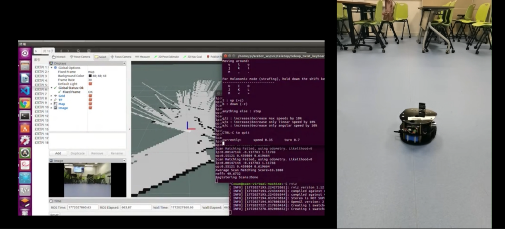
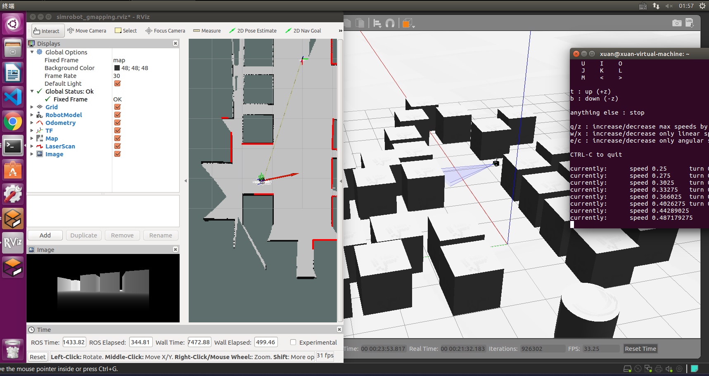
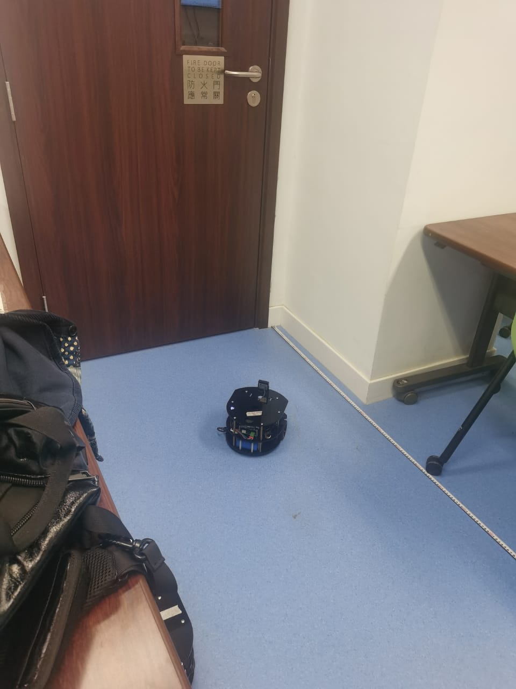
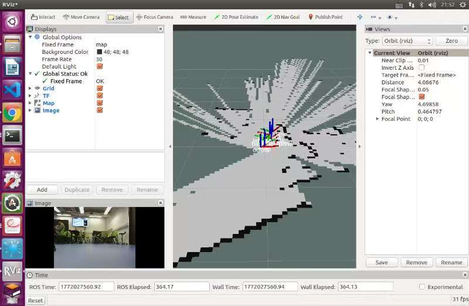

Sensing & localisation
Ultrasonic range readings provide obstacle information. The estimated position and heading tell the controller where the robot is relative to its next waypoint. A USB camera supplies the destination image.
CYBER-PHYSICAL SYSTEMS · GROUP PROJECT
A ROS-based mobile robot mission connecting waypoint navigation, obstacle avoidance, remote image transfer and return navigation.

01 / THE CHALLENGE
Our group built a ROS-based mobile robot system to travel through predefined waypoints, respond to obstacles, take a photograph at the goal, send it to a remote computer and return to its starting point.
The challenge was to connect sensing, localisation, motion control and task execution into one working sequence. A successful arrival was only one part of the task: the camera, communication and return journey also had to work together.
Follow the outbound waypoints.
Detect obstacles and select a clearer direction.
Photograph the goal area and transfer the image.
Follow the return route to the start.
02 / MY CONTRIBUTION
I was responsible for setting up the simulation and testing environment. This placed my work at the connection between the navigation software and the environments used to observe and test robot behaviour.
The navigation system and demonstration were group work. My teammate, Zhao Yicheng, handled report preparation, visualisation and data collection. Working within this division of responsibilities gave me practical experience supporting a shared robotics experiment.
03 / HOW IT WORKS
Ultrasonic range readings provide obstacle information. The estimated position and heading tell the controller where the robot is relative to its next waypoint. A USB camera supplies the destination image.
A reactive Bug0-style navigation strategy combines waypoint tracking with obstacle avoidance. Heading error determines turning; forward speed is reduced while the robot turns.
At the goal, the robot pauses to capture an image and attempts to transfer it to the control computer using SCP. The mission then proceeds through the return waypoints.
In scanning mode, the robot stops when an obstacle is close, turns to compare the available space on the left and right, chooses the clearer side and moves forward to bypass the obstacle before resuming waypoint tracking.
The implementation also uses a mild-avoidance mode and a direct mode for selected route segments. Direct mode does not check obstacles, so the route and test environment matter when interpreting the demonstration.
04 / SIMULATION
Gazebo provided the simulated world and mobile robot, while RViz made mapping and robot state visible. The simulation run reached the listed waypoints, bypassed an obstacle and completed the outbound and return sequence.

05 / PHYSICAL TESTING
The physical demonstration used a mobile robot with a front-mounted ultrasonic sensor, a USB camera and localisation on a pre-built map. We demonstrated the complete mission in the experimental environment, including the image task and return navigation.


06 / FINDINGS & NEXT STEPS
The project showed how a small set of sensors and a reactive controller can support a complete navigation-and-inspection task. It also exposed the practical dependencies between localisation, sensor readings, movement and network communication.
Reactive navigation has limits: U-shaped obstacles can trap the robot, the route is not globally optimal, ultrasonic sensing has a limited field of view, and wheel slip can affect motion estimation. These are useful directions for further testing rather than problems solved by the demonstration.
Potential extensions include wider obstacle sensing, improved state estimation, recovery behaviours and systematic parameter tuning. For me, the main lesson was to examine each part of the closed-loop workflow when diagnosing a navigation outcome.